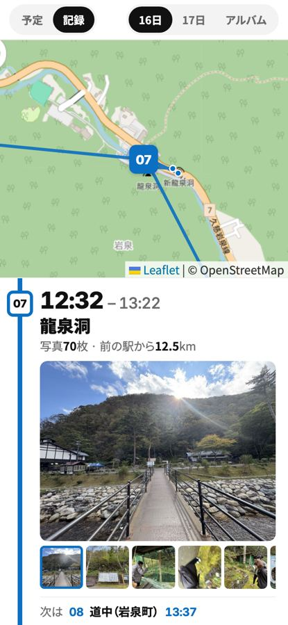
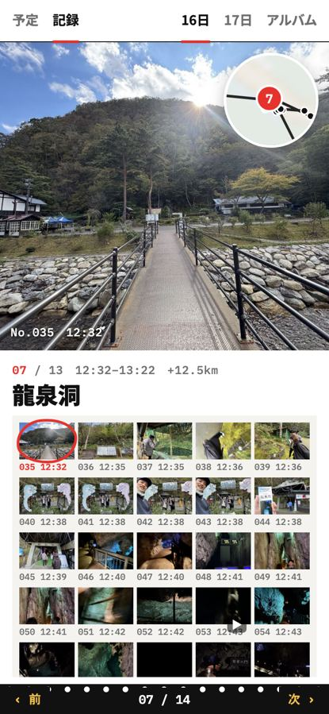
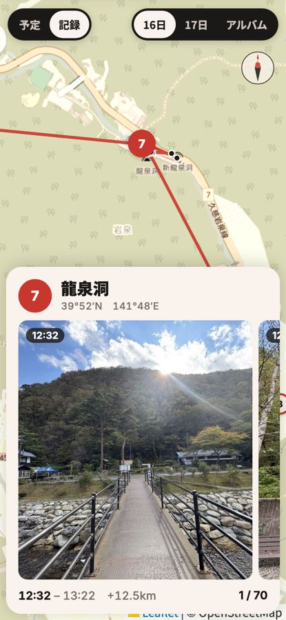

岩手の記録ページ、3つの見立て
10/16の本物の写真142枚・動画4本・13地点で動くモックです。どれも「地図と写真が連動」「1地点1画面」「今日の数字」「Cafe AWAIの会話」入り。押して触ってみてください。

A 路線図と発車標
1日を1本の路線にする
地点が「駅」。下へ送るたびに次の駅へ着く。
- ワクワク
- 「次は 08 道の駅いわいずみ 13:47」の発車標で、続きを見たくなる
- シュッと
- 白黒＋路線色の青1色。時刻は大きな等幅数字
- 見やすさ
- 地図が上に常駐。駅番号が地図のピンと同じ
- 骨格
- 上：地図固定／下：縦スナップ＋左端の路線
- 借用元
- uber.com の白黒キオスクと、出発●→到着■の縦線
この案を触る

B ライトテーブルのコンタクトシート
写真が主役のフィルム
横にめくると1地点。選んだコマに赤い丸。
- ワクワク
- 現像したてのベタ焼きを眺める感じ。赤いダーマトの丸
- シュッと
- 白い壁と等幅の小さなキャプションだけ
- 見やすさ
- 1地点の写真が全部1枚に並ぶ。地図は右上のルーペ、押すと全画面
- 骨格
- 横スナップ／上：大写真・下：コマの格子／地図は浮かぶ丸
- 借用元
- linusrogge.com の白い壁と隅の等幅キャプション
この案を触る

C 三陸の海図と航海日誌
地図の上を寄港していく
画面いっぱいの海図に、生成りのカードが浮かぶ。
- ワクワク
- 緯度経度つきで「寄港」する。三陸の海まで出ていく実感
- シュッと
- 生成り＋黒ピル＋灯台の赤1色
- 見やすさ
- 地図が全画面で触れる。写真は横スワイプで1枚ずつ大きく
- 骨格
- 地図が背景全面／下：浮かぶカード（縦送り）＋カード内で写真を横送り
- 借用元
- pampam.city の生成りの紙と、地図に浮く黒ピルとカード
この案を触る
どれか1つを選んだら、本番の記録ページ（kiroku/）にその骨格を移します。「Aの路線＋Bの赤丸」のような組み合わせもできます。